●115年國教輔導團績優輔導員
●115年臺北市智慧教育菁英 行政團體優等
●114年臺北市新世代學習空間通過
●114年臺北市智慧教育菁英 行政團體特優
●114年教育部5G新科技學習示範學校VR實踐獎
●114年教育部5G新科技學習示範學校非凡貢獻獎
●114年教育部數位學習深耕教練學校輔導臺北市、新北市共五所學校
●113年臺北市智慧教育菁英 資訊科技教學團體特優 x 2
●113年教育部數位學習深耕教練學校輔導臺北市、新北市共四所學校
●113年教育部5G新科技示範學校 5G實踐獎
●112年教育部數位學習深耕教練學校輔導臺北市四所學校
●112年臺北市資訊人員會議-跨域課程設計分享
●112-113年擔任教育部5G新科技示範學校
●2023親子天下教學創新獎
●2023親子天下企業特別獎
●112年教育部推動數位學習績優徵選PBL優良教案優等
以學生為主體，進行分組合作學習等課程與教學活化，協助學生學習
協助教師自發組成團隊與專業社群，精進教學專業，提升學生學習成效
自發、協同、精進、創新、有效
今天每講一個設計決定，我會回頭對這三件事
資料來源｜教育部國教署補助國民小學及國民中學活化課程與教學作業要點；葉興華〈教學活化 課綱深化〉；111 學年度申辦說明會實施計畫
兩台 ASUS Ascent GX10：免登入、資料不出校園、使用非中國的開放模型
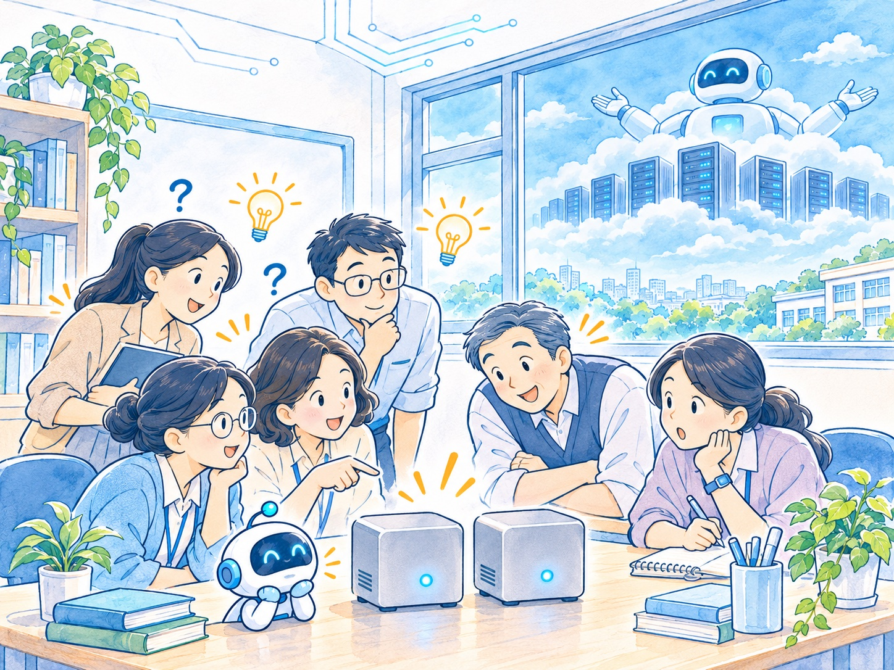
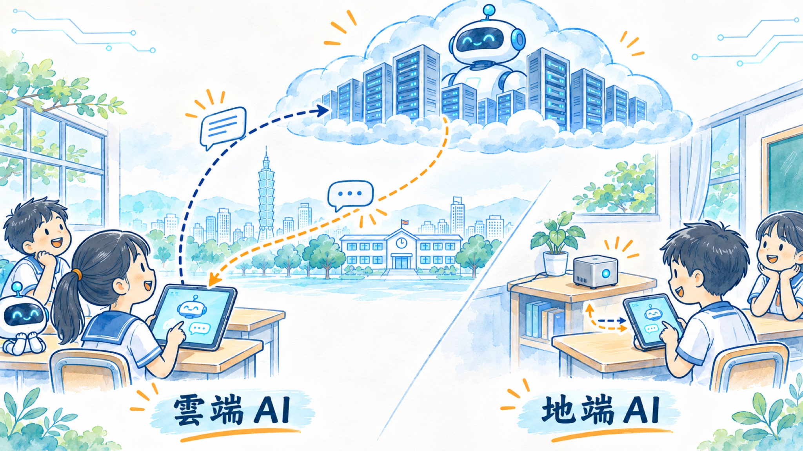
左｜雲端 AI（ChatGPT、Gemini）：問題送到遠方的大機房
右｜地端 AI：問題只送到教室裡那兩台電腦
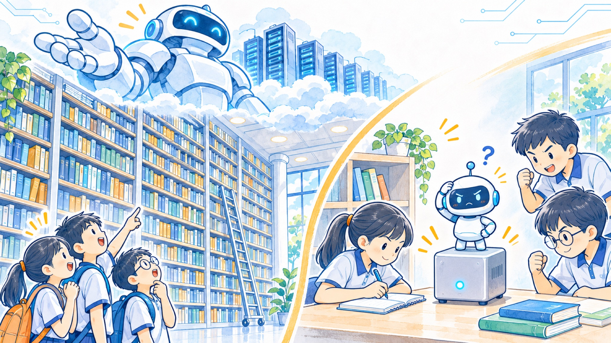
模型小很多：知道的比較少、會答錯、複雜的推理和長文章不行。日常的寫、改、分類、出題、看圖，夠用
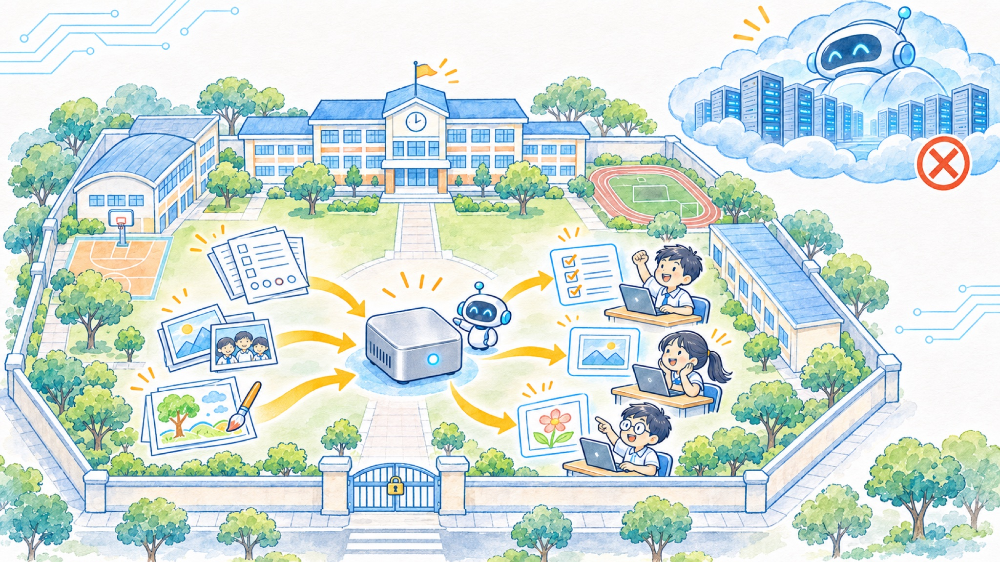
學生的考卷、照片、作品、打的每一句話，都只在校園網路裡。不用帳號、不用同意條款
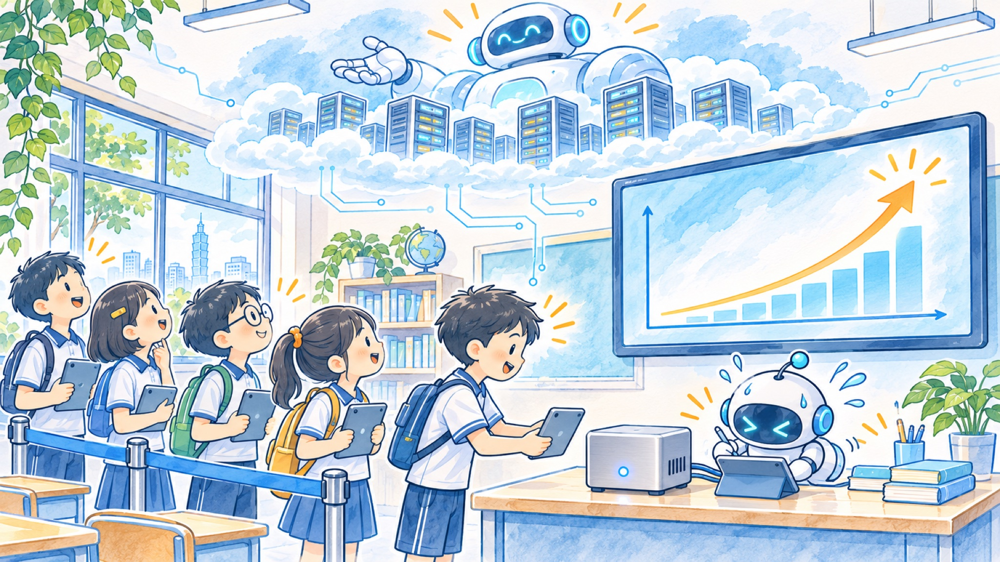
兩台電腦同時能服務的人數有限：畫一張圖約十幾秒、做一個小遊戲要兩三分鐘，全班一起按就要等
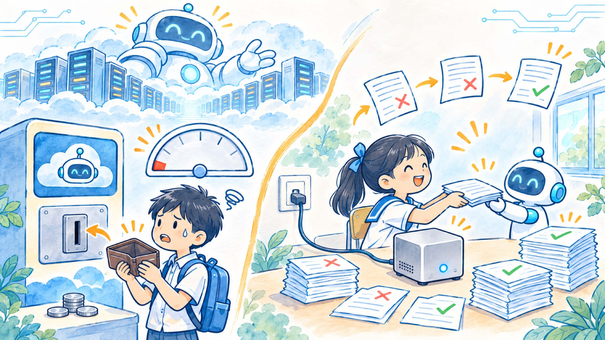
沒有額度、沒有月費：同一件事可以試十次、二十次，失敗了再來
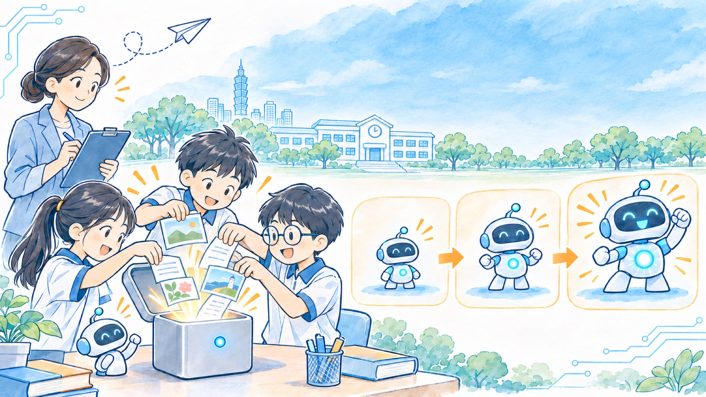
雲端的 AI 是別人訓練好的成品。地端的 AI，學生可以拿自己的資料訓練它，看它怎麼變
| 雲端 AI | 地端 AI（這間教室） | |
|---|---|---|
| 聰明程度 | 很聰明 | 比較弱，會答錯 |
| 資料去哪裡 | 送到校外的機房 | 留在校園裡 |
| 額度與費用 | 有額度，進階要付費 | 不計次 |
| 同時多人用 | 沒問題 | 要排隊 |
| 能不能自己訓練 | 不行 | 可以 |
| 在哪裡能用 | 有網路就行 | 只有校內 |
不是誰取代誰：老師備課用雲端很好；地端適合什麼，就是等一下要請大家想的
寫故事、改寫句子
出類似題、回答問題
做小動畫、小遊戲
讀出照片裡的題目
看懂學生的塗鴉
一句話變一張圖
塗鴉變成一幅畫
用照片教它分類
用文字養一個
會寫詩的小模型
不適合：查最新的資料、要求每個答案都對、很長很複雜的任務
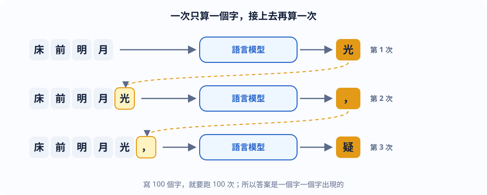
寫 100 個字就要算 100 次——所以畫面上的答案是一個字一個字冒出來的，人多就要排隊
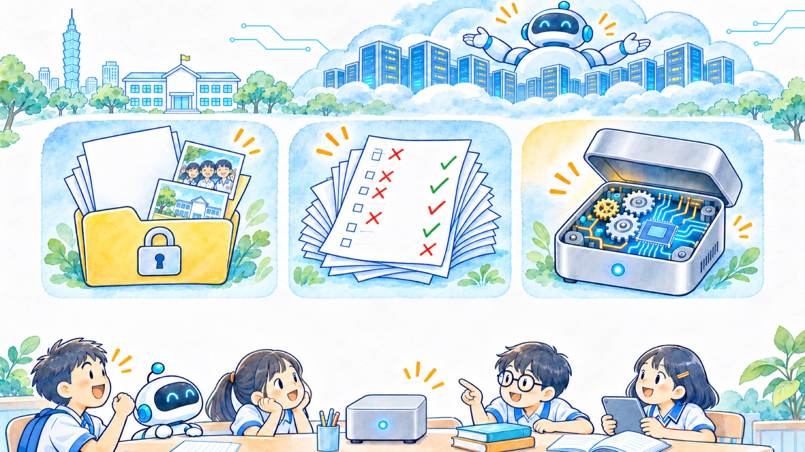
① 不能出校的資料 ② 可以一直試 ③ 看得見怎麼運作
再加一個：它會答錯——「弱」能不能變成教材？
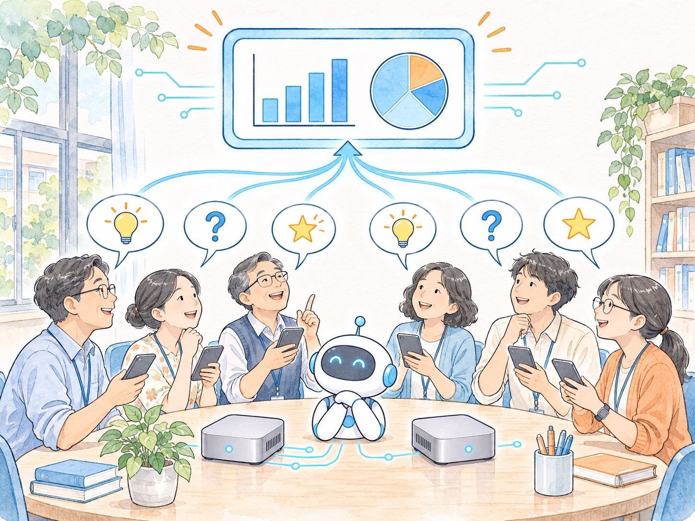
又弱、又要排隊；但資料不出校、不計次、可以自己教——它到底能做什麼？
手機版不一定有「儲存聊天」，用電腦版最穩
附件是一群國小老師在 LINE 上的發想紀錄（txt），題目是「像中山國中這樣的 AI 教室（AI 放在學校裡、不上雲端），該進行怎麼樣的教學」。 請用 Canvas 做成一個教學發想儀表板： 1. 把點子分類，並統計每一類有幾則，做成圖表。分三種分法： (a) 領域（國語、數學、自然、社會、藝術、健體、綜合、科技、校訂課程……） (b) 學生在做什麼（用 AI 創作／用 AI 探究／親手訓練 AI／檢查 AI 的錯／向別人講解） (c) 用到地端 AI 的哪個特色（資料不出校／可以一直試／可以自己訓練／看得見怎麼運作／其實用雲端也做得到） 2. 每一類列出 2～3 則代表性的原話 3. 挑出 3 個「只有地端做得到、或地端做起來特別好」的點子，各寫成一個教學活動草案：適用年級、學習目標、學生動手做什麼、老師做什麼 4. 每個草案再加一行：「沒有這種教室時，可以怎麼做」 5. 用顏色標出：哪些是紀錄裡原本就有的、哪些是你補充的 字要大、適合投影。
整理討論用的是雲端的 Gemini：這種事雲端做得又快又好——兩種 AI 各有位置
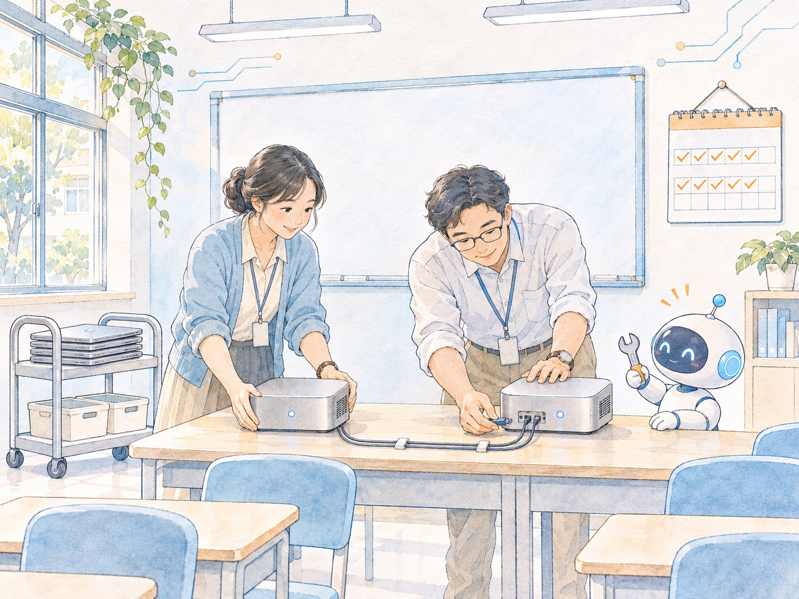
桌上型 AI 電腦，放在校內
學生打開網頁就能用
免登入
創作、探究、訓練 AI
硬體由華碩文教基金會捐贈；教室由教育局整建；系統由臺北市數位學習中心設計建置
資料來源｜2026-10-16 啟用儀式相關報導（iThome、科技新報）；平台系統架構頁
當天流程：6 位學生，2 位介紹平台，再把 Chromebook 交給來賓，學生陪來賓操作
資料來源｜壹電視 NEXT TV
接到任務
當天做出第一版
到校裝機
老師開始試用
依老師與學生試用
每天修改
啟用儀式
時間短有一個好處：沒辦法先寫完整計畫，只能做出來、給老師用、再改
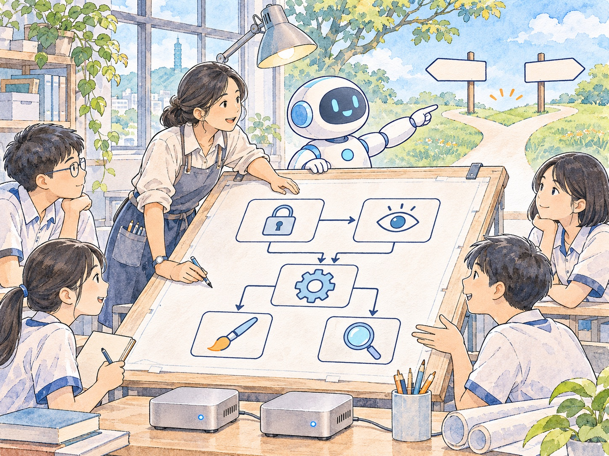
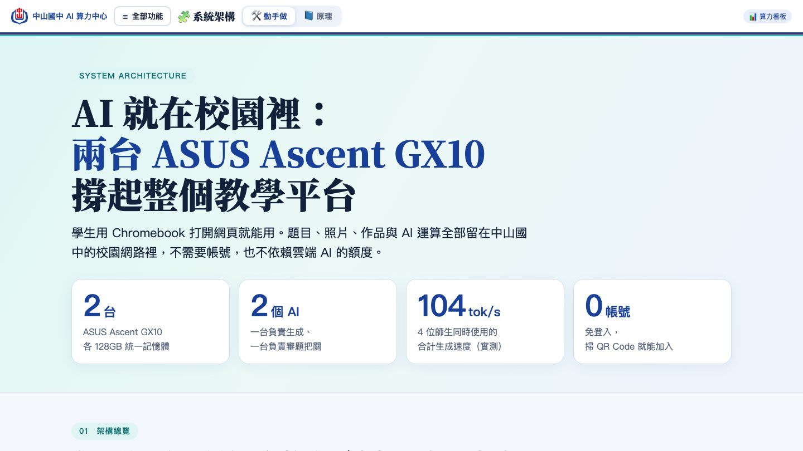
為什麼：一節課 45 分鐘，不能花 10 分鐘在登入
怎麼做：Chromebook 打開網頁就用；對戰掃 QR Code 加入
放棄了什麼：系統不知道誰是誰，沒有個人學習紀錄
怎麼補：作品要投稿、老師通過才上作品牆；個人化的練習留給酷AI
學生的題目、照片、作品都留在校園網路裡
不用擔心額度用完
學生看得到「AI 是一台機器」
在校外連不到
模型比雲端的小
同時太多人用要排隊
「為什麼要排隊？」
「為什麼它比 ChatGPT 笨？」
學生開始問算力的問題
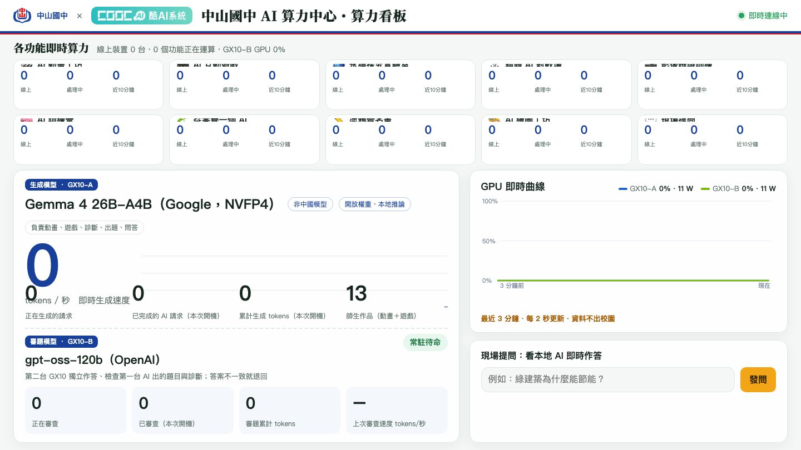
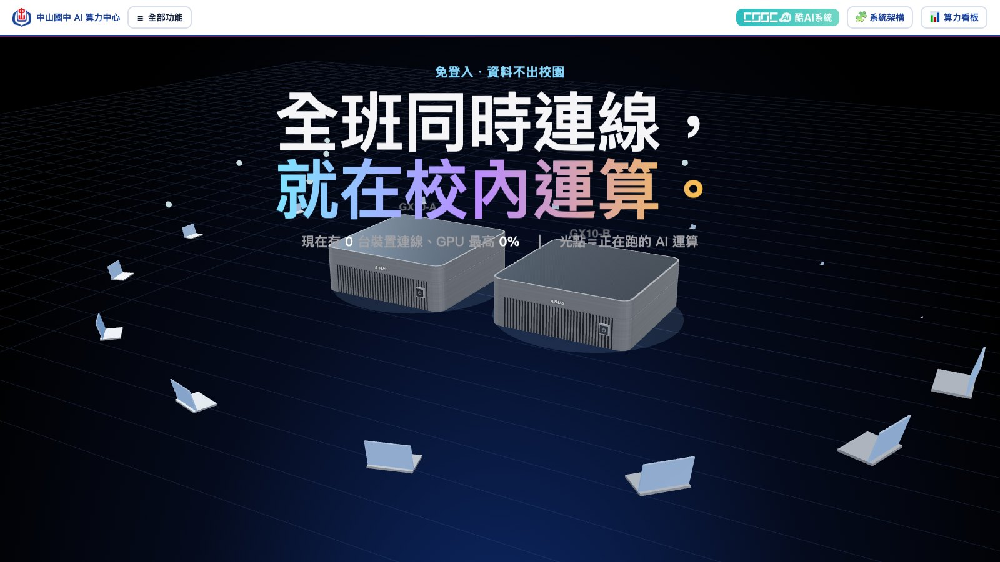
學生按下「開始」，大螢幕上的 GPU 曲線就衝上去；首頁的光點多寡跟著即時在線人數變——AI 不是魔法，是有人在算
寫動畫、做遊戲、出類似題、回答問題
自己把題目再算一次；答案跟第一台不一樣，就退回或標示「請老師確認」
AI 會出錯。我們不假裝它不會，而是讓學生看到「AI 也要被檢查」
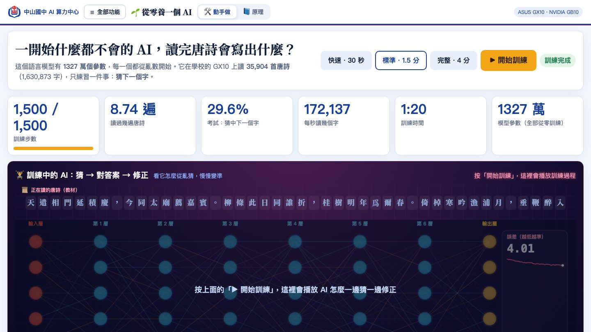
1,327 萬個參數全部從亂數開始，讀 35,904 首唐詩，只練一件事：猜下一個字。約 1 分半鐘
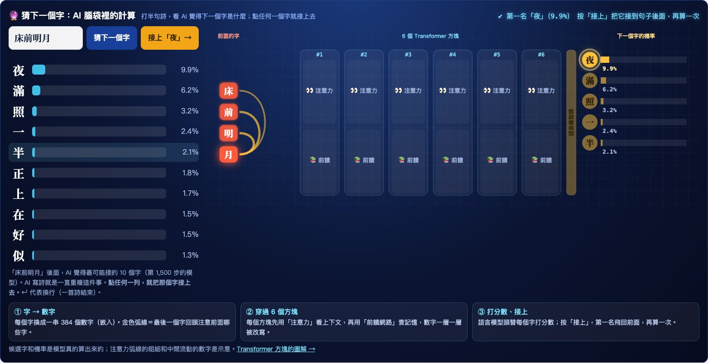
打半句詩，看訊號一層一層穿過 6 個 Transformer 方塊，最後每個字都有一個機率——候選字和機率是模型真的算出來的
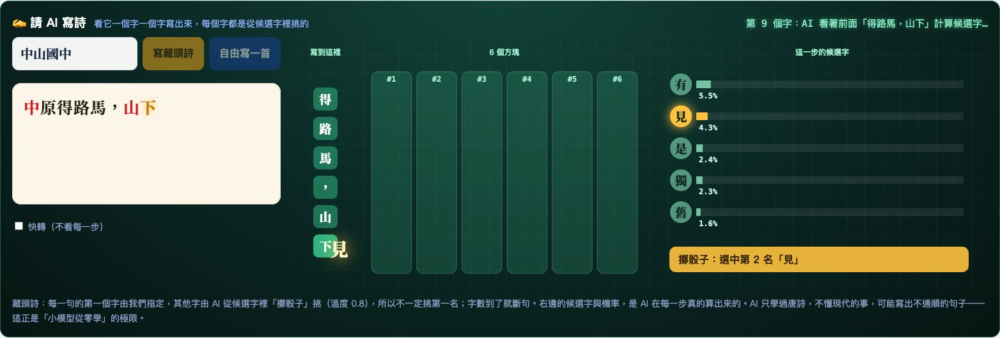
不一定挑第一名，是照機率擲骰子；藏頭字由人指定、字數到了自動斷句。所以同一題問兩次，答案會不一樣
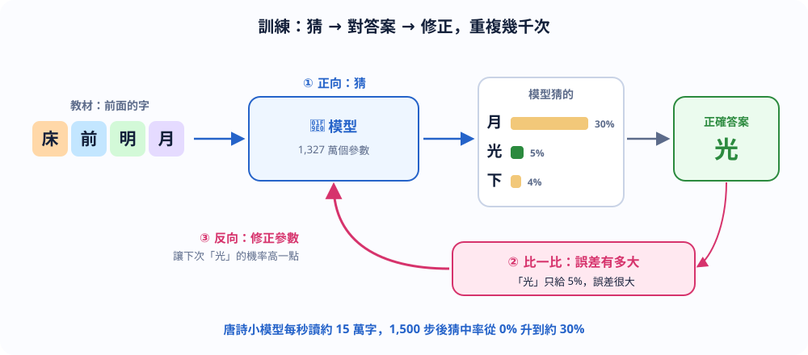
幾乎整篇背起來
完全沒進步
資料太少時，AI 是「背起來」，不是「學會」。大螢幕同時顯示這兩個數字
資料來源｜2026-10-06 實機測試（12 篇投稿、接著訓練 200 步）
學生在 AI 身上看到這件事，比在自己身上看到，容易接受得多
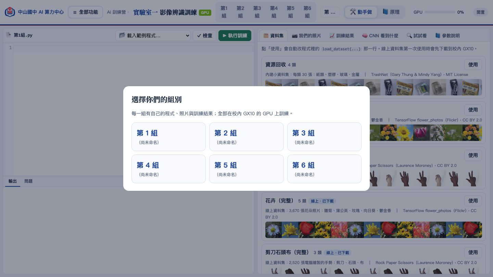
為什麼：國中資訊課要看得到程式，不是只按按鈕
怎麼做：六組各有一份 Python 程式，改資料集、模型、訓練輪數，送出後在校內 GPU 訓練影像辨識
安全設計：系統只「讀懂」程式裡的設定，不真的執行；寫別的東西會回中文錯誤訊息
同時最多 2 組上 GPU，其他組排隊，看板看得到
國小版的同一件事：不用寫程式，用拉桿和選單改參數，一樣能比較結果
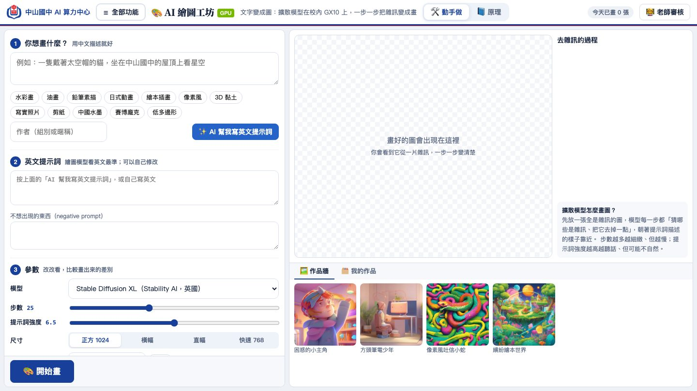
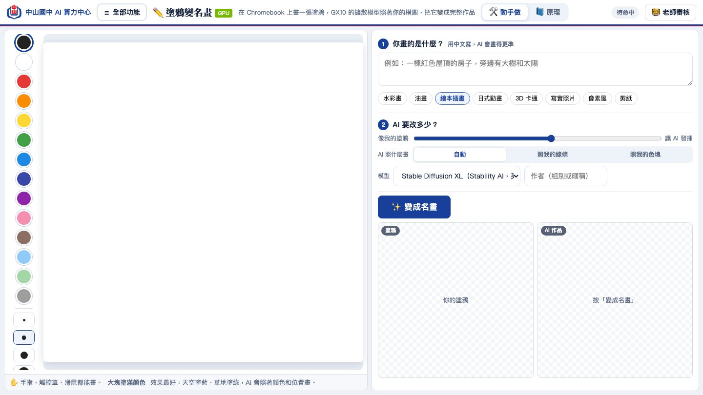
①關鍵字過濾 ②AI 審查描述（真實人物、暴力、歧視會被擋，並給替代建議） ③圖畫好再檢查一次 → 投稿後老師通過才上作品牆
11 課，每課：比喻、一張圖看懂、原理步驟、圖解、動手試試、AI 的限制。每個功能頂列「🛠 動手做｜📘 原理」一鍵切換
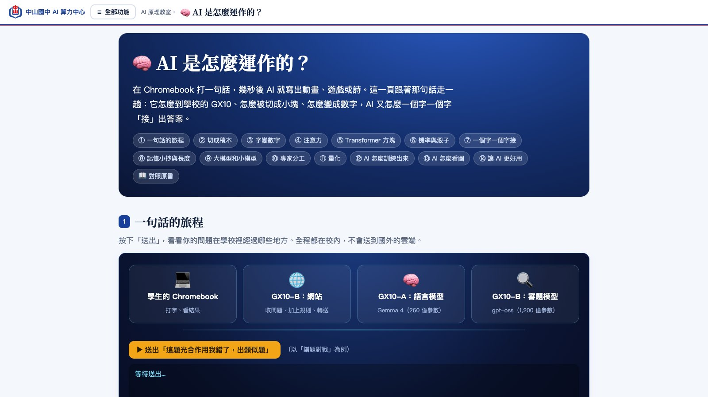
講解順序參考 Alammar & Grootendorst《Hands-On Large Language Models》；圖解全部用我們自己的例子重畫（床前明月、唐詩小模型）
| 原本 | 老師、學生用了之後 | 改成 |
|---|---|---|
| 錯題對戰：我判斷「不太需要」 | 到校隔天，主任說最喜歡這個 | 加音效、血條、類似題 |
| 框一題出 10 道類似題 | 老師：太多，5 題就好 | 改回 5 題 |
| 看板只有數字 | 看不出東西在動 | 加 GPU 即時曲線 |
| 學生講稿＝功能介紹 | 不像在學 AI | 改成原理版＋補充知識 |
| 可以現場拍照 | 校內網址開不了鏡頭 | 只留上傳照片 |
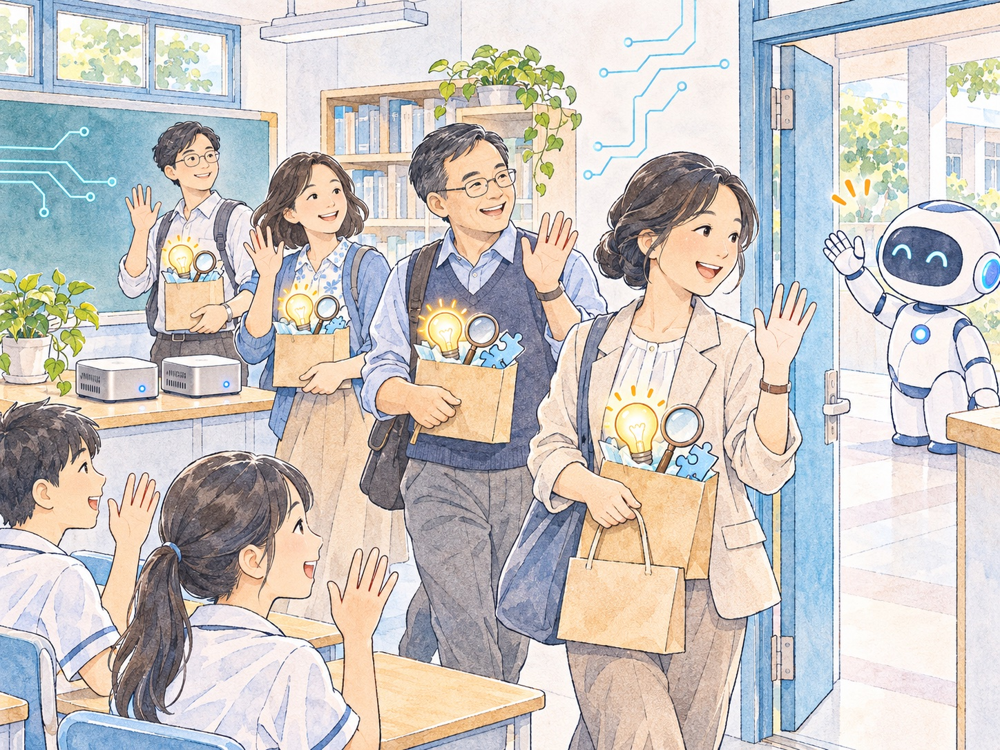
| 計畫在意的 | 這間教室的做法 | 國小可以怎麼做 |
|---|---|---|
| 學生是主體 | 學生訓練 AI、學生當講解者 | 讓學生教 AI、讓學生向別班介紹 |
| 分組合作學習 | 六組比實驗設計；兩人對戰 | 同一個任務，各組改一個變因再比 |
| 多元學習 | 打字、畫圖、上傳照片都能開始 | 給不同起點：說的、畫的、拍的 |
| 有效 | 背熟 99.6%、考題 24% 並排顯示 | 讓學生看到 AI 的錯，再討論為什麼 |
| 教師自發、協同、精進 | 老師試用→回饋→隔天修改 | 社群共備時，把 AI 工具當成共同修改的教材 |
工具可以用學校現有的：酷AI、Gemini（學校帳號）
帶一個問題回去：我的學生，可以在哪一步從「用的人」變成「做的人」？
等一下操作時遇到怪結果，很正常，歡迎告訴我們
AI 動畫工坊：一句話產生教學動畫
AI 互動遊戲工坊：提示詞教練＋程式設計師，做出小遊戲
永續探究實驗室：碳排、節電、樑承重——數字由程式算，AI 只負責解說
錯題對戰場：框一題考卷上的錯題，AI 出 5 道類似題，兩人對戰
| 問題 | 回答 |
|---|---|
| 這要花多少錢？ | 硬體是捐贈；系統由數位學習中心自行開發，使用開放模型，沒有授權費 |
| 別的學校可以用嗎？ | 目前在中山國中校內運作；設計與原理教室的內容可以分享 |
| 會取代老師嗎？ | 審核、提問、帶討論都是老師；系統把「AI 會錯」放在學生看得到的地方 |
| 國小生適合嗎？ | 塗鴉、繪圖、對戰可以直接用；訓練的部分建議高年級，並改用拉桿選單 |